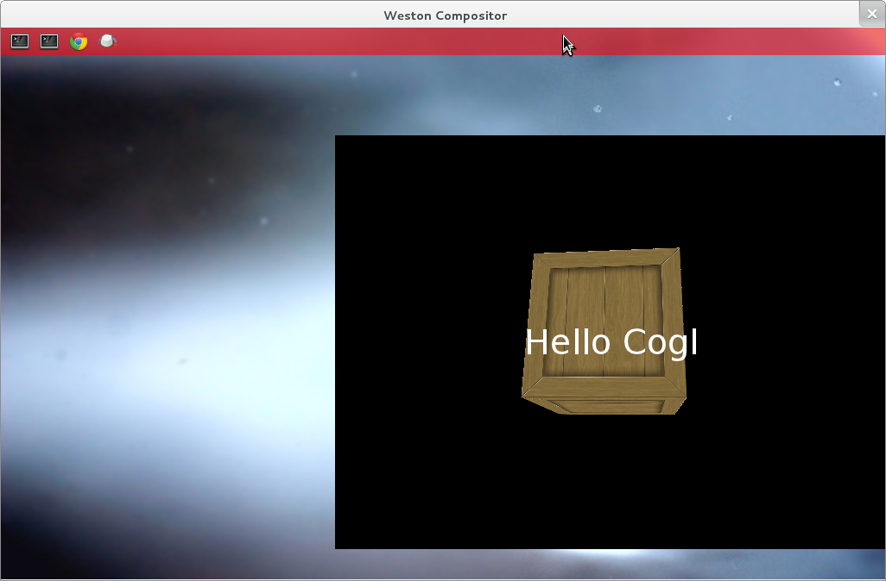
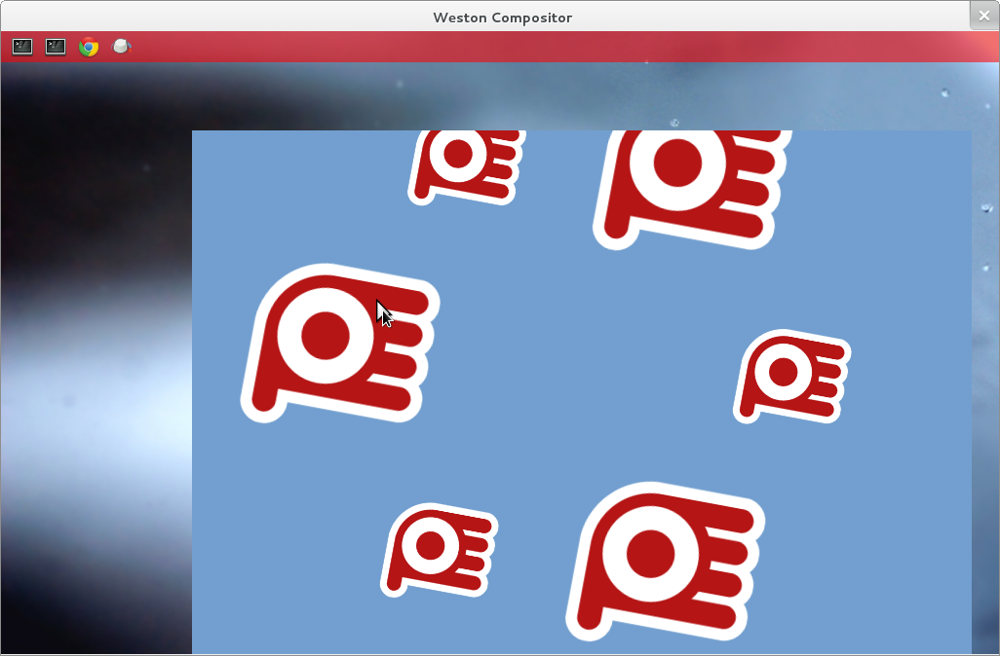

Clutter is toolkit for writing rich graphical animated applications on top of OpenGL and OpenGL-ES. It uses the Wayland EGL abstraction to integrate with Wayland.
For correct functionality with current Wayland you must use the Clutter and Cogl master branches. Cogl is the OpenGL and OpenGL-ES abstraction layer that Clutter is built on. As a precursor to these steps you must have downloaded and compiled Wayland as per the building instructions.
Clutter master also currently depends on an unstable release version of glib and atk. To avoid problems it is advisable to install this into the prefix used in the Wayland build instructions.
$ git clone git://git.gnome.org/glib $ git clone git://git.gnome.org/atk $ git clone git://git.gnome.org/cogl $ git clone git://git.gnome.org/clutter
This section depends on the environment variables defined in the build instructions being set.
$ ./autogen.sh --prefix=$WLD $ make && make install
$ ./autogen.sh --prefix=$WLD $ make && make install
$ ./autogen.sh --prefix=$WLD --enable-wayland-egl-platform=yes --enable-gl $ make && make install
$ ./autogen.sh --prefix=$WLD --enable-wayland-backend $ make && make install
The configure scripts may report some missing packages. Install these from source or from your distribution.
The Clutter and Cogl source tree include some test programs that you can run to check functionality. You must ensure the following environment variables are set to allow Cogl and Clutter to identify which backend to use:
export CLUTTER_BACKEND=wayland COGL_RENDERER=egl_wayland
You can confirm that Cogl is working correctly in Wayland by running
example/cogl-crate inside the Cogl source tree. It should look
something like the screenshot below.

To test Clutter there are some tests in the tests/interactive
directory. tests/interactive/test-actors should appear as in the
screenshot below. When you click the animating hands they will disappear.

The Clutter port to Wayland is complete with only some minor errata listed in the known issues
clutter-1.0 pkg-config
file rather than clutter-glx-1.0 or
clutter-x11-1.0API to access the underlying wl_surface, wl_shell_surface and wl_display may be available in later versions of the code but are not available right now.
Try the #clutter IRC channel on irc.gimp.org or if you've found a bug you can report it in GNOME Bugzilla.